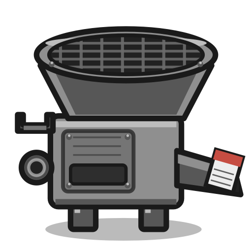

A Launch Agent (com.justus.pdfeater) runs a hidden watcher. It listens on the desktop folder and also scans every 1.5s so copies that finish late still get picked up.
Minigames · Mac app
A folder on the Mac desktop that behaves like a machine. Drop a file in. It comes back as PDF, PNG, JPEG, or plain text — whatever you set. The original is put away; a file it can’t read is bounced back onto the desk.
After install there is a folder named PDF Eater on the desktop, with a hopper icon. Anything you throw in is watched by a Launch Agent in the background. You don’t open a window to convert — you drop the file and wait a second.

Images (JPEG, PNG, HEIC, WebP, TIFF, GIF, BMP), text and
Markdown, RTF, HTML, Word (.doc / .docx),
PDF, and Pages if Pages is installed. Folders that aren’t a
.pages bundle are left alone.
Default is PDF. Settings can switch the whole machine to PNG, JPEG, or text. Text mode uses PDFKit on PDFs and Live Text (Vision) on images. Output lands on the desktop unless you pick another folder.
A Launch Agent (com.justus.pdfeater) runs a hidden watcher. It listens on the desktop folder and also scans every 1.5s so copies that finish late still get picked up.
Images become A4 PDF pages. Word goes through textutil. Pages is exported via AppleScript. Text is laid out with Core Text. Failures don’t sit in the hopper.
On success the original moves to ~/Library/Application Support/PDF Eater/Originals. On failure the file is moved back to the desktop so you can see it didn’t work.
Settings live in a small window (German UI: Ausgabeformat and
Zielordner). Inside the hopper there is an Einstellungen
stub; opening it brings that window up. You can pick Desktop,
Documents, or any folder — except the hopper itself, so the machine
doesn’t eat its own output.
It’s a Swift package, same shape as SpotifyBar: sources, an
Info.plist, and scripts/package-app.sh that builds a
signed PDF Eater.app and installs the Launch Agent.
Double-clicking the app opens settings; the agent runs with
--watch in the background.
The conversion side is PDFKit, ImageIO, Vision, and a few
command-line helpers rather than a cloud API. The desktop folder
gets a custom icns (the hopper) so it reads as a machine, not a
generic Finder folder. CLI still works:
PDFEater --convert file.docx ~/Desktop.
From the PDF Eater package: ./scripts/package-app.sh.
That puts the app in ~/Applications, creates the
desktop folder, and loads the agent.
Drop a file onto PDF Eater on the desktop. The converted file appears in the target folder. Open Einstellungen in the hopper if you want PNG, JPEG, or text instead of PDF.